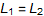

where κ is material dependent
Exam Like Questions: Module 4
Lecture 8 and 9
T/F
1) In a parallel plate capacitor one plate is charged positively and the second plate has the same charge but is negative.
Answer: True
That’s how capacitors work, they store charges until the dielectric is overcome.
2) A capacitor that has a dielectric material between its plates has a reduced capacitance.
Answer: False
For air
For dielectric
Therefore, it is material dependent. In most cases, it would not make sense to include a dielectric if it reduced capacitance.
Multiple Choice
1) Three 16 F capacitors connected in series have an equivalent capacitance of a) 0.188 F, b) 5.33 F, c) 16 F, or d) 48 F
Answer: B
2) What is the capacitance of two metal plates each of area 0.96 and separated by 0.5 mm using aluminum oxide as the material between the plates: a) 143 nF, b) 17 nF, c) 1430 nF, or d) 170 nF
Answer: A

where κ is material dependent

Useful Exercises
1) A 0.01 μF, 300 V capacitor costs 25c, a 0.1 μF , 100 V capacitor costs 35c, and a 30 μF, 5 V capacitor costs 88c. a) which can store most charge, b) which can store most energy, c) which is the most cost effective energy storage device, measured in C/c.
Answer:
Charge[1) (least), 2) (middle), 3) (most)]
Energy[1) (middle), 2) (most), 3) (least)]
Cost Efficiency[1) (best), 2) (middle), 3) (least)]
a)
b)
c)

2) A medical defibrillator stores 950 J in a 100 μF capacitor. a) what is the voltage across the capacitor? b) if the capacitor discharges 300 J of its stored energy in 2.5 ms what is the power delivered during this time?
Answer: a) 4.359 kV b) 120 kW
Lecture 10
T/F
1) When an electric current flows through a resistor heat energy is converted to electrical potential energy.
Answer: False
electric energy → heat
2) The current carrying electrons in a metal wire have drift speed close to the speed of light.
Answer: False
I=n A q 
3) The smaller the resistivity of a material the larger the current is that flows through the material.
Answer: True
Ohm’s Law: 
Multiple Choice
1) What current flows when a 45 V potential difference is imposed upon 2, 10.7 kΩ resistors in parallel, a) 4.21 mA, b) 2.10 mA, c) 8.41 mA, or d) 4.21 kA
Answer: C
2) A 10 kΩ, 5 kΩ, and 8 kΩ resistor are in parallel and a total current of 0.8 A flow through the circuit. How much current flows through the 8 kΩ resistor, a) 0.235 A, b) 0.188 A, c) 0.1 A, or d) 0.8 A.
Answer: A
Useful Exercises
1) A 100% efficient electric motor lifts a 15 N weight at 25 cm/s. How much current does it draw from a 6.0 V battery?
Answer: 0.625 A
→I V (electric) and =F v
for 100% efficiency
2) Silver and iron wires of the same length and diameter carry the same current. How do the voltages across the two wires compare?
Answer: where Ag and Fe
They have the same dimensions and same current which means they have the same current density
and
V=-∫E dL
|V|=|E| L
but

so